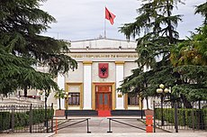

Politika
Shqipëria është një republikë kushtetuese parlamentare dhe shtet sovran, politika e së cilës funksionon sipas një kuadri të përcaktuar në kushtetutë ku presidenti funksionon si kreu i shtetit dhe kryeministri si kreu i qeverisë. Sovraniteti i takon popullit shqiptar dhe ushtrohet nga populli shqiptar nëpërmjet përfaqësuesve të tij ose drejtpërdrejt.Kushtetuta e Shqipërisë u miratua më 28 nëntor 1998 përmes referendumit mbarëpopullor. Kjo kushtetutë përkufizon Shqipërinë si republikë parlamentare, shtet unitar e të pandashëm, si dhe me qeverisje të bazuar "në një sistem zgjedhjesh të lira, të barabarta, të përgjithshme e periodike". Sipas kushtetutës, organi ligjvënës përbëhet nga një dhomë – Kuvendi – dhe ka 140 anëtarë, të cilët zgjedhin kreun e shtetit, Presidentin e Republikës, si dhe Këshillin e Ministrave e ngarkuar me pushtetin ekzekutiv.
